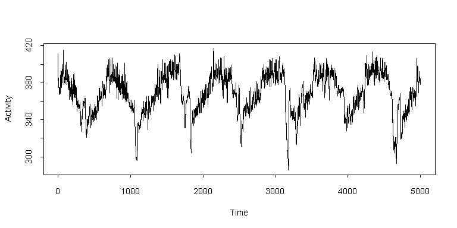

| / Home |
Keywords: time series, periodicities, outliers.
The data are temperature recordings made at 2 minute intervals over 3 months on a nocturnal mammal, Perognathus formosus (long-tail pocket mouse - common in the Nevada desert). The animal was given 8 days of 12 hours light and 12 hours dark as an adjustment period, followed by 68 days of constant darkness.
The data was collected at Princeton University in the late 1960's under the direction of Dr C. S. Pittendrich. The interest of the researchers was to observe periodicities in the behaviour of the animals. Four experiments were completed over a period of several years. The experiments used equipment to isolate each animal from its external environment as completely as possible, a telemetry system to transmit animal body temperate and an activity sensor in the floor of each cage. The telemetry system consisted of a small temperature transmitter implanted in each animal and a receiver and data logging system. Each experiment used 17 animals of the same species isolated in 17 separate cages, with an 18th cage containing only a temperature transmitter in order to monitor the environment. Each cage contained a light source so that the photoperiod for each animal could be varied.
The data given here are the telemeter frequency temperature recordings for one animal from the first experiment, with higher counts indicating higher temperature. Since the interest was in periodicity, no effort was made to relate the telemeter frequency to actual temperature.
The data file contains 59616 observations of temperature, arranged in 3726 rows of 16. The data should be read by rows, that is from left to right and then from top to bottom. (I have left blank lines in the data file to indicate where the blocks ended on the original data tape.) Since recordings were made at 2 minute intervals, this corresponds to nearly 83 days of data, rather more than the 76 days that there should nominally be.
Various problems arose during the experiments, including transient or permanent equipment failure or death of the animals. About half of the cages continued to produce data through to the end of the experiment. The data logging equipment was also imperfect, as it was based on a conversion to mechanical keypunch operation. Readings were punched in fields on standard 80 column cards. Some card punch problems, such as jams and misfeeds, were corrected during the experiment. Other malfunctions became evident during data analysis, namely mispunched data (non-numeric or out-of-range) or column shift (all data shifted left by some number of columns). In the data presented here, obvious errors have been corrected, but a proportion of outliers and other errors remain. There are some sequences of zeros, which correspond presumably to temporary failures of the recording equipment.
| Variable | Description | ||
| Temperature | Body temperature, with higher counts indicating greater temperature | ||
Data File (zipped text file)
| Smyth, G. K., and Hawkins, D. M. (2000). Robust frequency estimation using elemental sets. Journal of Computational and Graphical Statistics 9, 196-214. |
| Andrews, D. F., and Herzberg, A. M. (1985). Data. A collection of problems from many fields for the student and research worker. Springer, New York. Data Set 48.1. Data and description contributed by Michael D. Godfrey, ICL. |
| The raw data was obtained electronically from the Statlib database. In the OzDASL data-file, the data is re-formatted to make it easier to read into statistical programs. |
The plot shows segment of 5000 consecutive observations (nearly 7 days) during total darkness. There are no apparent outliers in this segment.

|
Home - About Us -
Contact Us Copyright © Gordon Smyth |